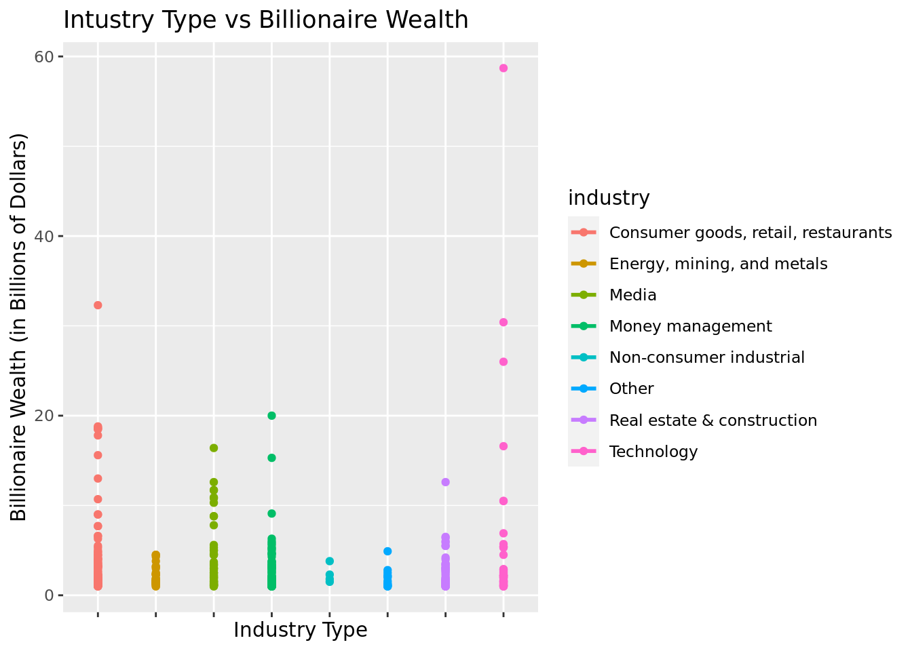

Sevenr Project
Report
Introduction and data
The first question that comes to mind when a billionaire is the topic of conversation is: “How did they make that much money?” There are only so many in the world, making them a fascinating subject to study considering the success they have achieved. Some have inherited their wealth, while others reached it through entrepreneurship or investments. Because there are so many different ways a person can become a billionaire, it is interesting whether anything can be learned about the world’s current billionaires, and whether that can be taken and used to estimate how much a given billionaire is worth.
Research question and hypothesis
Thus, our research question is: what is the best indicator(s) for predicting a billionaire’s wealth? That is, what factors regarding a billionaire contribute the most to his/her wealth?
Our hypothesis is that the industry of the billionaire’s field of work, the gdp of the billionaire’s country, and billionaire’s age will be included, as those seem to be pertinent to wealth accumulation. Since some industries are booming more than others and have higher wealth “ceilings” (ex. technology industry vs. media industry), we believe knowing the industry has a sizable impact on the billionaire’s wealth. We also hypothesize a positive linear relationship between a billionaire’s wealth and the gdp of their country due to the benefits of a strong economy, making the country gdp a good indicator. Lastly, we think there is another positive linear relationship between wealth and the billionaire’s age, as company founders that make up a large proportion of billionaires tend to accumulate more wealth over time, thus making age a good indicating variable as well.
Literature Review
James Petras (2008) Global ruling class: Billionaires and how they “make it”, Journal of Contemporary Asia, 38:2,319-329, DOI: 10.1080/00472330701822355
https://www.tandfonline.com/doi/epdf/10.1080/00472330701822355?needAccess=true&role=button
The article discusses the rise of billionaires in several major countries and regions in the world, providing historical, social, and political context to explain how they acquired their wealth. The countries/regions mentioned are Russia, Latin America, China, and India. The major projected relevant details are the histories of each region, and if the billionaires inherited their wealth. For example, India is undergoing extreme class polarization; while the billionaires are used as evidence of India’s growing wealth, in reality people are growing poorer and poorer as the billionaires continue to exploit the system to gain more wealth. The article also lists the 3 general stages of becoming a billionaire in reference to these regions. What ties the regions together is that they are developing areas; although billionaires are emerging, one cannot conclude that the people themselves are growing wealthier.
The article only focuses on four regions in the world in relation to wealth of a country and number of billionaires. Our research question aims to expand the scope to the entire world, and rather than focus on the political/social backgrounds of the regions to explain billionaire wealth, we are focusing on the billionaires and their companies themselves, in addition to their country of residence. This article does make us reconsider our original hypothesis of there being a positive linear relationship between wealth and country gdp. We at first thought a lower country gdp would result in a lower billionaire wealth, but this article suggests that in many developing countries with lower gdps, the billionaires’ success is indifferent to that of the country’s success due to class polarization and unfair governments, so billionaires continue to acquire wealth despite the general population struggling. Country gdp might not be such a good indicating variable, but we will see if anything changes when we look at a new dataset.
Data
Rows: 2,614
Columns: 22
$ name <chr> "Bill Gates", "Bill Gates", "Bill Gates", "Wa…
$ rank <int> 1, 1, 1, 2, 2, 2, 3, 3, 3, 4, 4, 4, 5, 5, 5, …
$ year <int> 1996, 2001, 2014, 1996, 2001, 2014, 1996, 200…
$ company.founded <int> 1975, 1975, 1975, 1962, 1962, 1990, 1896, 197…
$ company.name <chr> "Microsoft", "Microsoft", "Microsoft", "Berks…
$ company.relationship <chr> "founder", "founder", "founder", "founder", "…
$ company.sector <chr> " Software", " Software", " Software", " Fina…
$ company.type <chr> "new", "new", "new", "new", "new", "privatiza…
$ demographics.age <int> 40, 45, 58, 65, 70, 74, 0, 48, 77, 68, 56, 83…
$ demographics.gender <chr> "male", "male", "male", "male", "male", "male…
$ location.citizenship <chr> "United States", "United States", "United Sta…
$ location.country.code <chr> "USA", "USA", "USA", "USA", "USA", "MEX", "CH…
$ location.gdp <dbl> 8.10e+12, 1.06e+13, 0.00e+00, 8.10e+12, 1.06e…
$ location.region <chr> "North America", "North America", "North Amer…
$ wealth.type <chr> "founder non-finance", "founder non-finance",…
$ wealth.worth.in.billions <dbl> 18.5, 58.7, 76.0, 15.0, 32.3, 72.0, 13.1, 30.…
$ wealth.how.category <chr> "New Sectors", "New Sectors", "New Sectors", …
$ wealth.how.from.emerging <chr> "True", "True", "True", "True", "True", "True…
$ wealth.how.industry <chr> "Technology-Computer", "Technology-Computer",…
$ wealth.how.inherited <chr> "not inherited", "not inherited", "not inheri…
$ wealth.how.was.founder <chr> "True", "True", "True", "True", "True", "True…
$ wealth.how.was.political <chr> "True", "True", "True", "True", "True", "True…The dataset we are working with to answer our research question is a large listing of billionaires across the world along with information about them collected at three different time points (1996, 2001, and 2014). There are 2614 observations and 22 variables. Not every observation is a unique billionaire; many are repeated up to three times (one at each time point). In addition, not every variable is statistically interesting; many, such as name, rank, and company.name are identifying variables. However, the other variables are statistically useful and interesting, and our goal is to investigate them.
The dataset was created in 2016 by Caroline Freund and Sarah Oliver, who are (or were) researchers at the Peterson Institute for International Economics. They compiled the list of individuals from Forbes billionaire lists dating from 1996 to 2015. A large percentage of the additional information collected was publicly available, coming from sources such as Forbes, news articles, and company websites.
One caveat about this dataset, and any data categorizing wealth, is that defining wealth is a subjective matter. For example, Forbes had to make many choices in determining who to include in the lists used as sources for this dataset. One such choice was to exclude billionaires that obtained wealth from official positions (e.g. high government roles, state leader positions, etc.). Another choice was to exclude billionaires who obtained their wealth via illegal methods. In addition, individuals and companies may fabricate what they publish about themselves, or simply characterize themselves subjectively. Thus, when drawing conclusions from analysis of this dataset, we must be careful not to generalize statements about legal nonpolitical billionaires to any person on the planet who accumulates wealth.
Relevant variables
As mentioned, there are 22 variables, of which some are identifying variables, and the rest are more useful or interesting. They are listed in the table:
| Variable name (unmodified) | Meaning |
|---|---|
| company.relationship | relationship to the company (founder, etc.) |
| company.sector | the sector of the economy to which the business belongs |
| company.type | type of business of the company |
| demographics.age | age of the individual |
| location.citizenship | name of the country for which the individual has citizenship |
| location.country.code | 3-letter country code for which the individual has citizenship |
| location.gdp | gross domestic product of the country for which the individual has citizenship |
| location.region | part of the world where the individual lives |
| wealth | net worth of the individual in billions of USD |
| wealth.how.category | where the individual’s money came from |
| wealth.how.industry | the specific industry the individual profited from |
| wealth.how.inherited | whether the individual’s wealth was inherited or not |
| wealth.how.was.founder | whether the individual founded their company or not |
| wealth.type | the type of billionaire that they are |
Of these variables, the wealth variable (underlined and italicized) makes for an interesting response variable; that is, we are interested in seeing how this variable could possibly be affected or even predicted by the other variables.
Methodology
Data cleaning
Before any analysis, the dataset was tidied up.
Year
As mentioned in the dataset description, the data was collected at three different years, 1996, 2001, and 2014. We filtered for a single year instead of working with the data over time to allow us to control for year when building our linear regression. We chose the year 2001 because location.gdp was a variable of interest, and 2001 is the most recent year for which there is data on GDP across the world (there is no GDP data for 2014 in this dataset). The variable wealth.worth.in.billions was also renamed to just wealth.
Industry
Another variable that is of interest is wealth.how.industry, whose values are strings representing the industries that made the billionaires wealthy. After renaming the variable, we combined related industries together. For example, “Venture capital”, “Hedge funds”, “Diversified financial”, and “Private equity/leveraged buyout” all fit into the “Money management” industry.
Age
demographics.age is another interesting variable; however, several billionaires have an age of 0 listed, which meant some had died before 2001. Because researching dozens of individual death dates or ages demands excessive effort, we decided to filter out any age with 0.
Company Type
We tidied up company.type for use by merging misspelled or mistyped values. In the end, the three values are “new”, “acquired”, and “other”, with “new” taking precedent over “acquired”.
Company Relationship
How the individual is related to their company (e.g. CEO, investor, founder, etc.) is represented by company.relationship. We cleaned it up similarly to company.type. The unique relation types are founder, chairman, CEO, owner, investor, and relation, with founder taking precedent over CEO, CEO over the joint category of chairman/investor/owner, and chairman/investor/owner over relation. President was collapsed into CEO, and employee and lawyer were collapsed into relation. Two observations where company relation is unknown were filtered out.
Company Age
How old the company is may also give some insight. We calculated the age of the company by subtracting its founding year (from company.founded) from 2001, saving the results to a column named company.age. A single observation with 0 as a founding year was dropped.
Inherited Wealth
Finally, the variable inherited is changed to a binary categorical variable. The end result of the cleaning is a dataset with 413 observations, each of which is a billionaire with information on them from the year 2001.
Rows: 413
Columns: 24
$ name <chr> "Bill Gates", "Warren Buffett", "Paul Allen",…
$ rank <int> 1, 2, 3, 4, 6, 7, 8, 9, 10, 10, 12, 13, 14, 1…
$ year <int> 2001, 2001, 2001, 2001, 2001, 2001, 2001, 200…
$ company.founded <int> 1975, 1962, 1975, 1977, 1980, 1962, 1962, 196…
$ company.name <chr> "Microsoft", "Berkshire Hathaway", "Microsoft…
$ company.relation <chr> "founder", "founder", "founder", "founder", "…
$ company.sector <chr> " Software", " Finance", "technology", " soft…
$ company.type <chr> "new", "new", "new", "new", "new", "new", "ne…
$ age <int> 45, 70, 48, 56, 44, 53, 55, 57, 52, 81, 73, 4…
$ demographics.gender <chr> "male", "male", "male", "male", "male", "male…
$ location.citizenship <chr> "United States", "United States", "United Sta…
$ location.country.code <chr> "USA", "USA", "USA", "USA", "SAU", "USA", "US…
$ location.gdp <dbl> 1.06e+13, 1.06e+13, 1.06e+13, 1.06e+13, 1.83e…
$ location.region <chr> "North America", "North America", "North Amer…
$ wealth.type <chr> "founder non-finance", "founder non-finance",…
$ wealth <dbl> 58.7, 32.3, 30.4, 26.0, 20.0, 18.8, 18.7, 18.…
$ wealth.how.category <chr> "New Sectors", "Traded Sectors", "New Sectors…
$ wealth.how.from.emerging <chr> "True", "True", "True", "True", "True", "True…
$ industry <chr> "Technology", "Consumer goods, retail, restau…
$ wealth.how.inherited <chr> "not inherited", "not inherited", "not inheri…
$ wealth.how.was.founder <chr> "True", "True", "True", "True", "True", "True…
$ wealth.how.was.political <chr> "True", "True", "True", "True", "True", "True…
$ company.age <dbl> 26, 39, 26, 24, 21, 39, 39, 39, 39, 39, 85, 2…
$ inherited <fct> Not inherited, Not inherited, Not inherited, …Preliminary visualizations
Age
The mean age of the billionaires is around 61.5762712 years old. Below are graphs of the age distribution and wealth plotted against age. We see that age follows a bell curve distribution centered at around 60 years old. The relationship between age and wealth seems weak visually, and there does not appear to be a certain age range that contains significantly higher amounts of wealth than the others; however, age is still an interesting variable to consider.


Company Age
The mean company age of the billionaires is 53.3510896. Below, company age is plotted in similar fashion as billionaire age. Most companies are younger than 100 years. We can see that the billionaires with wealth amounts above the majority (greater than $10 billion) are involved with companies that are 100 years old or younger.


Inherited Wealth
Just how many billionaires inherit their wealth? The bar plot below shows that while most of the billionaires do not inherit their wealth, the difference in number between the two groups does not seem too significant.

Below is a histogram displaying the distribution of total wealth when faceted by inheritance status. The data skews right for both distributions, suggesting that the majority of both types of billionaires have less than 10 billion USD. There appears to be more inherited billionaires in the 10-20 billion USD range, but more non-inherited billionaires in the 20+ billion USD range.

# A tibble: 2 × 2
inherited mean_wealth
<fct> <dbl>
1 Inherited 3.65
2 Not inherited 3.29The mean wealth of those who inherit their wealth seems to be higher than those who didn’t.
Industry
Next, we visualize the proportion of various company industries, as well as wealth distributions by industry.


The proportions and numbers are summarized below. The consumer goods, retail, and restaurants industry seems to dominant the billionaire population in terms of number of billionaires, but billionaire wealth is highest on average in the technology industry, likely due to more extreme outliers. In terms of average billionaire wealth, the top four industries are “Technology” “Media”, “Consumer goods, retail, and restaurants”, and “Money Management”.
# A tibble: 8 × 4
industry mean_wealth count percent_industry
<chr> <dbl> <int> <dbl>
1 Consumer goods, retail, restaurants 3.97 119 28.8
2 Energy, mining, and metals 2.08 33 7.99
3 Media 4.11 52 12.6
4 Money management 2.76 81 19.6
5 Non-consumer industrial 2.35 4 0.969
6 Other 1.86 14 3.39
7 Real estate & construction 2.59 54 13.1
8 Technology 4.80 56 13.6 Country GDP
The mean GDP of all the locations the billionaires are based is 6.2615877^{12}. Below is a scatterplot displaying the relationship between GDP and wealth. There is not a clear relationship the two. While we see the billionaires with the highest amounts of wealth come from the countries with the highest GDP, there is not an apparent linear trend. The average wealth for each level of country gdp appears roughly the same, with the highest country gdp likely having a slightly higher average wealth.

Multivariate linear regression
We plan to use multivariate linear regression to construct a model because we want to consider the effects of several of the variables in the dataset simultaneously on the wealth variable. The main question when constructing a multivariate linear regression model is which variables should be included and which variables should be excluded. One strategy to answer this question is backwards elimination. During backwards elimination, one starts with all variables of interest in the model. Then, each variable is excluded one at a time and the model is assessed to see if exclusion of the variable has improved it. If the model is improved with the variable gone, then it is removed and the process repeats until the model cannot be improved by variable exclusion any further. The criterion we use for variable exclusion is the AIC value, which characterizes how well the model fits the data. A lower AIC value means a better-fitting model, so if removing a variable results in a model with a lower AIC, then that is motivation for removing that variable from the model. We start with 8 variables which we considered interesting: age, company age, company relation, company type, industry, inheritance status, GDP, and wealth type.
Backwards Elimination
Tables showing the AIC values at each step of the process are shown. The variable name is the variable that was removed from the model to generate the corresponding AIC value.
| variable_list | aic_values |
|---|---|
| all included | 2483.861 |
| -age | 2482.576 |
| -company.age | 2482.282 |
| -company.relation | 2477.996 |
| -company.type | 2480.696 |
| -industry | 2487.732 |
| -inherited | 2482.052 |
| -location.gdp | 2484.185 |
| -wealth.type | 2480.402 |
Removed company.relation
| variable_list | aic_values |
|---|---|
| all included | 2477.996 |
| -age | 2476.723 |
| -company.age | 2476.416 |
| -company.type | 2475.008 |
| -industry | 2481.817 |
| -inherited | 2476.176 |
| -location.gdp | 2478.294 |
| -wealth.type | 2475.352 |
Removed company.type
| variable_list | aic_values |
|---|---|
| all included | 2475.008 |
| -age | 2473.720 |
| -company.age | 2473.288 |
| -industry | 2478.862 |
| -inherited | 2473.324 |
| -location.gdp | 2475.231 |
| -wealth.type | 2472.496 |
Removed wealth.type
| variable_list | aic_values |
|---|---|
| all included | 2472.496 |
| -age | 2470.944 |
| -company.age | 2471.113 |
| -industry | 2474.538 |
| -inherited | 2473.264 |
| -location.gdp | 2471.623 |
Removed age
| variable_list | aic_values |
|---|---|
| all included | 2470.944 |
| -company.age | 2469.364 |
| -industry | 2472.539 |
| -inherited | 2471.350 |
| -location.gdp | 2470.104 |
Removed company.age
| variable_list | aic_values |
|---|---|
| all included | 2469.364 |
| -industry | 2471.357 |
| -inherited | 2469.406 |
| -location.gdp | 2468.621 |
Removed location.gdp
| variable_list | aic_values |
|---|---|
| all included | 2468.621 |
| -industry | 2470.790 |
| -inherited | 2468.364 |
Removed inherited.
The final model only has the variable industry. Below, the coefficients of this model are tabulated; the intercept industry is “Consumer goods, retail, and restaurants”.
# A tibble: 8 × 2
term estimate
<chr> <dbl>
1 (Intercept) 3.97
2 industryEnergy, mining, and metals -1.89
3 industryMedia 0.140
4 industryMoney management -1.21
5 industryNon-consumer industrial -1.62
6 industryOther -2.11
7 industryReal estate & construction -1.38
8 industryTechnology 0.831[1] 0.03561891\[ \hat{wealth} = 3.97 - 1.89*industry_{energy} + 0.14*industry_{media} - 1.21*industry_{finance} - 1.62*industry_{nonconsumer} \]
\[ - 2.11*industry_{other} - 1.38*industry_{realestate} + 0.83*industry_{technology} \]
Based on this model, the predicted wealth of a billionaire in the “Consumer goods, retail, and restaurants” industry is roughly $3.97 billion, and the predicted wealth of a billionaire in the “Technology” industry is roughly $4.8 billion.
The \(R^2\) value of this model is 0.03561891.
The visualization of the relationship between industry and wealth is below.

Conclusion
After several rounds of backwards elimination, the model only consists of the variable industry, which represents the various company industries. Thus, we conclude the best model for predicting billionaire wealth is actually a univariate linear regression model consisting of the variable industry. This means that when trying to predict billionaire wealth using our model, one needs to look at the coefficient associated with each industry type to determine whether wealth tends to be higher or lower in that industry. Each industry has its own opportunities for wealth and growth prospects, and some have higher potential and greater freedoms that allow them to facilitate greater fortunes to their participants. Consumer goods, retail, and restaurants is an industry that reaches everybody around the world, and technology is an industry that is constantly growing and taking over the world, so it makes sense that they see the greatest wealth amounts. Keep in mind this data comes from the year 2001, though, so we would imagine an even greater billionaire wealth amount for those in the technology industry in 2023, as it has grown exponentially as an industry since 2001.
Although the several rounds of backwards elimination resulted in industry being the final variable, a close look at the \(R^2\) value of the model shows that it is only 0.0356, which is not high. A low \(R^2\) value means that very little of the variability in the data is captured by the model. Thus, while being the best variable out of the original eight, it is not a very good predictor on its own. This result makes sense; wealth accumulation is not as simple as entering the right industry type. After all, there are many, many people working in each of the listed industries. However, only a few are billionaires. In addition, the fact that most of the variables did not make it into the final model does not mean that becoming a billionaire is a totally random process. There must be reasons why some people accumulate fantastic amounts of wealth while others don’t. It is likely that such reasons are incredibly complex, and either may not be included in dataset as variables, or may be too complicated to even quantify or categorize.
There are several directions we could go in for future studies. For one, a multivariate model using the variables can still be constructed using forward selection. We chose backwards elimination because we wanted to consider as many variables at once at the beginning. However, by doing forward selection, it is possible to obtain a different model than the one determined via backwards elimination. We could also investigate each variable separately, and observe whether there are any particularly high \(R^2\) values associated with them. Finally, there clearly must be future research done to uncover other possible variables. Either way, while there are several factors that are known to lead to wealth accumulation, combining them into a mathematical model to predict wealth still remains an elusive task.